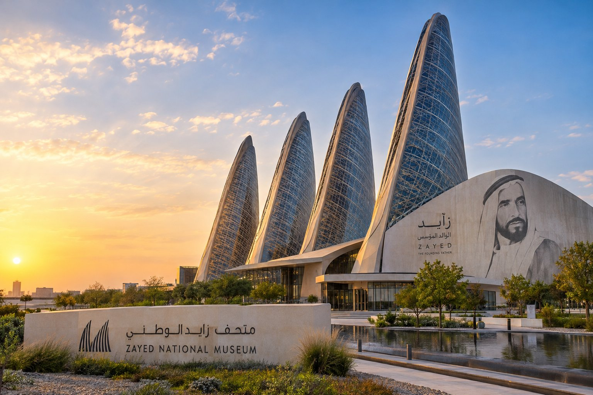

Zayed National Museum Abu Dhabi: Discover the Story of the UAE’s Heritage and Vision

Zayed National Museum on Saadiyat Island, Abu Dhabi.
Abu Dhabi is a city that rarely stands still. Glass towers keep rising along the Corniche, new districts appear on former sandbanks, and yet the capital has been working just as deliberately on something less visible: how to tell the story of where it came from. Nowhere is that clearer than on Saadiyat Island, where Zayed National Museum Abu Dhabi opened its doors on 3 December 2025, the day after UAE National Day.
As the national museum of the United Arab Emirates, it does something few attractions manage. It places a single life, that of the country’s founding father, at the centre of a much larger story about land, sea, trade and belonging. For anyone looking for things to do in Abu Dhabi that go beyond shopping malls and skylines, it is one of the most meaningful places to spend an afternoon.
The Man Behind the Museum
Sheikh Zayed bin Sultan Al Nahyan is remembered across the UAE as the founding father. Born around 1918 in Al Ain, he became Ruler of Abu Dhabi in 1966 and, five years later, the first President of the newly formed United Arab Emirates. His leadership helped transform a collection of desert emirates into a modern federation, while he repeatedly emphasised education, environmental care and unity.
The museum is not a conventional portrait gallery. It uses Sheikh Zayed’s life as a lens through which visitors can understand the deeper history of the land and its people. His personal story is woven into broader themes of desert survival, maritime trade, cultural exchange and nation-building.
Architecture Inspired by the Falcon
Designed by Foster + Partners, the building is instantly recognisable for its five soaring towers that evoke the wings of a falcon in flight. The falcon holds deep cultural significance in the UAE as a symbol of heritage, hunting tradition and national identity.
The architecture is also highly practical. The wing-like forms act as solar thermal chimneys, drawing hot air upward and creating natural ventilation. This passive cooling system reduces energy demand in the desert climate and reflects Sheikh Zayed’s long-standing interest in environmental stewardship.
Inside, the galleries are arranged around a central atrium. Natural light filters carefully through the structure, while the overall experience is designed to feel both monumental and intimate.
What You Will See Inside
The permanent exhibitions move through several key themes:
- Origins and environment – how early communities adapted to the harsh desert and coastal landscape.
- Trade and exchange – the role of the Gulf in ancient and medieval trade networks that linked the Indian Ocean, the Arabian Peninsula and beyond.
- Society and culture – daily life, oral traditions, poetry, and the values that shaped Emirati identity.
- Sheikh Zayed’s vision – his personal journey, leadership decisions and the founding of the UAE.
- Nation and future – how the ideals associated with Sheikh Zayed continue to inform the country’s direction.
Objects range from archaeological finds and traditional tools to documents, photographs and contemporary interpretations. Interactive elements and carefully paced storytelling help make the narrative accessible to both first-time visitors and those already familiar with UAE history.
Location and Getting There
Zayed National Museum sits on Saadiyat Island, part of Abu Dhabi’s Cultural District alongside the Louvre Abu Dhabi, the upcoming Guggenheim Abu Dhabi and other cultural institutions. The island is connected to the mainland by bridges and is easily reached by road.
From central Abu Dhabi the drive is typically 20–30 minutes depending on traffic. From Dubai the journey is usually just over an hour. Many visitors combine the museum with other Saadiyat attractions or continue to Yas Island or the city centre.
Tickets and Opening Hours
At launch the museum opened daily from 10:00 am to 8:00 pm, with last entry one hour before closing. General admission was AED 70 for adults, with reduced rates for children, students and seniors, and free entry for certain categories. Opening hours and ticket prices can change, so it is always best to check the official website zayednationalmuseum.ae before you visit.
Advance online booking is recommended, especially on weekends and public holidays.
Practical Tips for Your Visit
- Allow at least two to three hours if you want to experience the galleries at a comfortable pace.
- The museum is suitable for families; younger visitors will find interactive displays and clear storytelling.
- Photography rules may vary by gallery — check signage or ask staff.
- Comfortable shoes are advisable; the building is large and you will cover a fair amount of ground.
- Combine your visit with nearby cultural sites on Saadiyat Island for a full day of heritage and art.
A Suggested Day Plan
- Morning transfer from your hotel in Abu Dhabi or Dubai to Saadiyat Island.
- Visit Zayed National Museum (2–3 hours).
- Lunch nearby or continue to the Louvre Abu Dhabi.
- Optional afternoon exploration of the Cultural District or return transfer to your hotel, or onward to dinner.
If you would like a transfer arranged for a day like this, you can request a transfer quote from Private Hire Limousine.
Frequently Asked Questions
How do I get to Zayed National Museum from Dubai? By road, the museum is typically more than an hour from most parts of Dubai. Options include a taxi, ride-hailing, intercity bus plus a local connection, or a pre-arranged private transfer.
Can I book a driver to wait while I visit? Many private transfer operators can arrange waiting time or a return pickup. Confirm the terms when you request your quote.
What are the Zayed National Museum opening hours? At launch, the museum opened daily from 10:00 am to 8:00 pm, with last entry one hour before closing. Check zayednationalmuseum.ae for current hours.
How much are Zayed National Museum tickets? General admission was AED 70 for adults at launch, with reduced and free categories. Check the official website for current prices.
Why Zayed National Museum Abu Dhabi Matters
It would be easy to treat a new national museum as one more stop on a sightseeing list. But Zayed National Museum Abu Dhabi asks for something slightly different from its visitors: attention to how a country understands itself. Its galleries trace a long arc from ancient toolmakers to a modern federation, and its architecture turns a beloved bird of the desert into a statement about sustainability and identity.
For residents, it offers a shared story. For visitors, it offers context that makes every other part of the UAE easier to read, from the old forts and souks to the towers on the skyline. That is the real value of the museum: it helps you see that the Abu Dhabi of today did not appear from nowhere, and that its aspirations are rooted in values with a long history.
Visitor details such as opening hours, ticket prices and access arrangements can change. Check the museum's official website before travelling. The featured image is AI-generated and is intended as an illustration, not a documentary photograph.